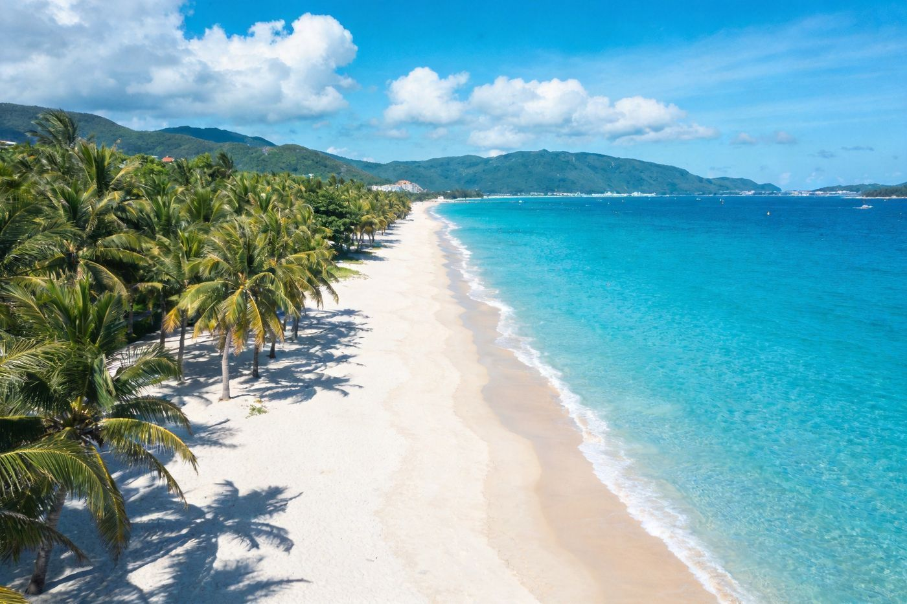
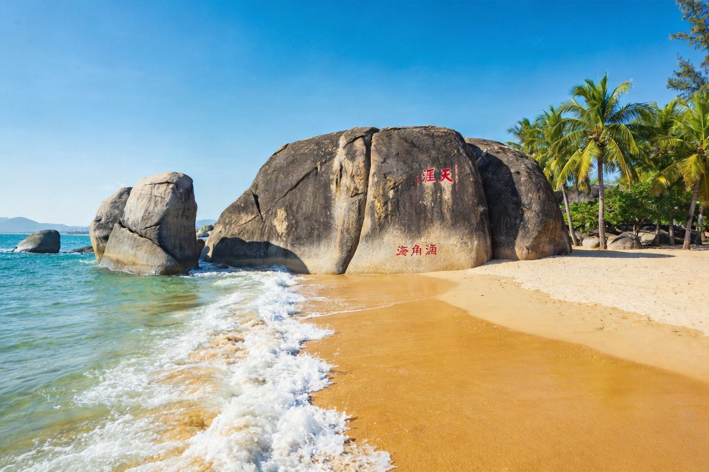
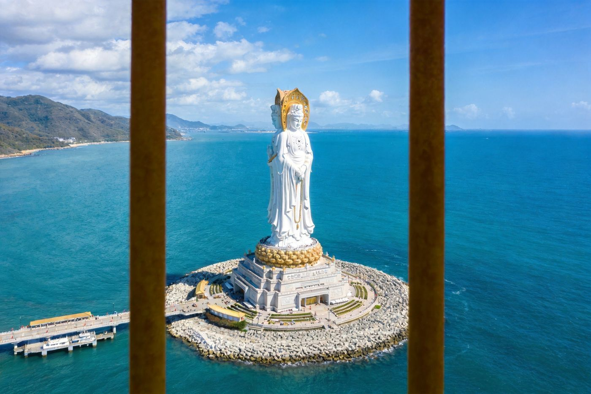
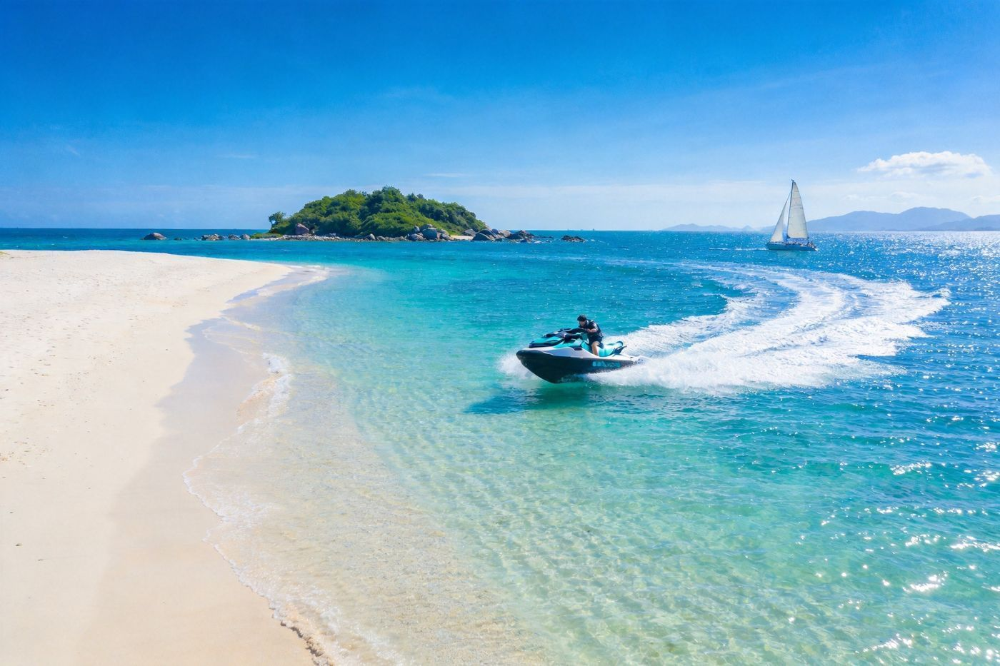
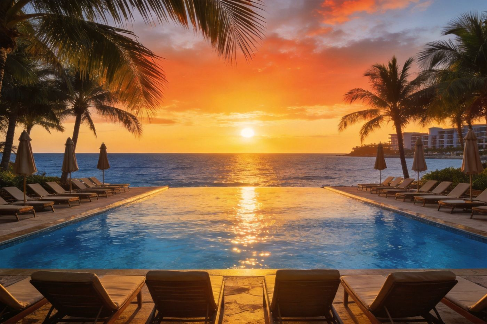
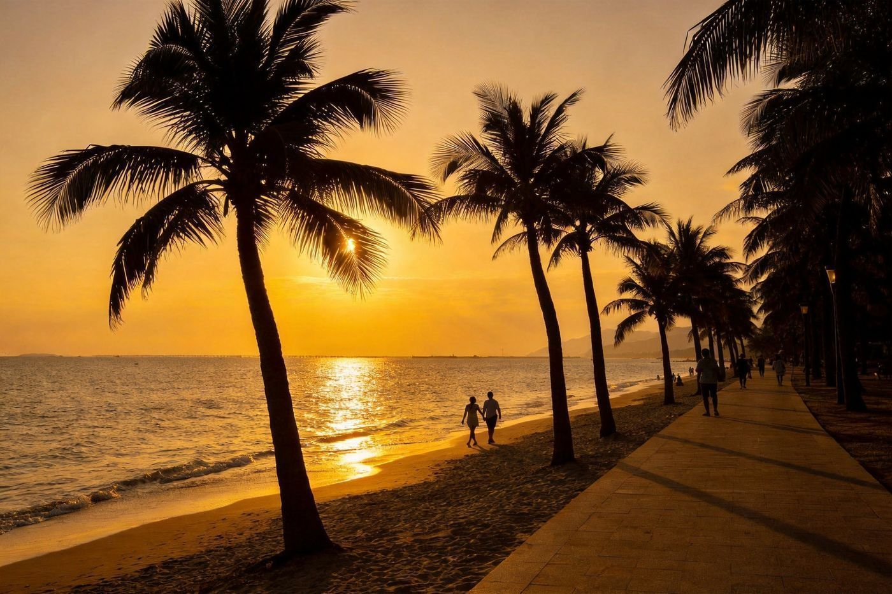
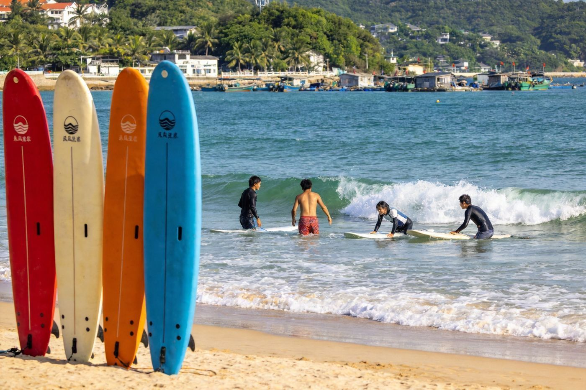
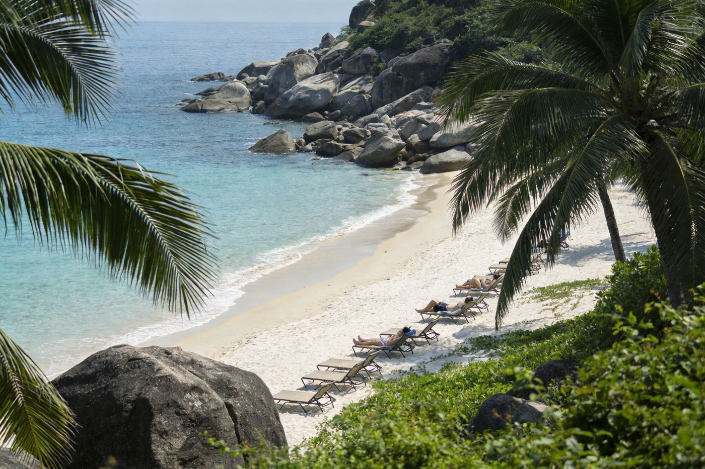

🌴 三亚 · SANYA TRAVEL GUIDE
三亚四模式组合指南
一页看完四种玩法：2 天快充 / 3 天加长 适合短假，海边+景点高效刷片；5 天度假 / 7 天深度 主打豪华悠闲，酒店躺平+海岛出海全安排。有豪华享受，也有景点+海边的组合，1–3 人均适用。
📍 目的地：三亚
👥 1–3 人
⏱️ 短途2/3天 · 度假5/7天
💰 人均预算已附
短途 · 轻旅行
度假 · 豪华悠闲
⚡2 天 · 快充版（海边+经典）
只有一两天假期也想看海的速通玩法：一天海边海岛、一天经典地标，好吃好拍不贪多。
👥 1–3 人适配：景点与海边均不限人数；住宿按 2 人房分摊比特价，3 人开家庭房或双房更划算。下方预算按 人均。
🗺️ 行程安排
-
DAY 1 · 海边 + 海岛感
🌊 上午 亚龙湾踏沙踩浪🏍️ 下午 亚龙湾/大东海水上项目（摩托艇/香蕉船）
🦐 傍晚 第一市场/火车头海鲜市场🌃 晚上 三亚湾椰梦长廊散步
💡 亚龙湾海水最清、沙最细，是三亚第一梯队海滩；第一市场买海鲜记得砍价+看清称重。
-
DAY 2 · 经典地标 + 收尾
🏔️ 上午 天涯海角（看海礁+椰林）🛍️ 中午 海棠湾免税城/市区美食
🚗 下午 返程
⚠️ 天涯海角在市区天涯区，约车 20–30 分钟；旺季人杂，早去人少光线好。
🏝️3 天 · 加长版（海边+海岛+景点）
比 2 天多一个海岛日，把「出海」和「经典地标」都融入，节奏更从容。
👥 1–3 人适配：蜈支洲/西岛出海一日，2 人包游艇、3 人更划算；门票与水上项目按人收费。预算按 人均。
🗺️ 行程安排
-
DAY 1 · 抵达 + 滩涂夜色
✈️ 抵达三亚🏖️ 下午 大东海/三亚湾下海🌃 晚上 椰梦长廊 + 海鲜排档
🛏️ 第一晚建议住大东海/市区，海边与出行都方便，价格比海棠湾亲民。
-
DAY 2 · 海岛出海一整天
🚤 上午 蜈支洲岛/西岛出海（可选潜水/摩托艇）🏝️ 下午 岛上午餐 + 沙滩躺平
🌅 傍晚 返回市区
💡 蜈支洲海水通透、适合浮潜；西岛相对小众清净。一日游船票各平台比价，含接送更省心。
-
DAY 3 · 经典地标 + 返程
🏔️ 上午 天涯海角 或 南山（二选一）🛍️ 中午 免税城/市区择一顿
🚗 下午 返程
⚠️ 南山园大+南山海上观音壮丽但需大半天；赶时间就选天涯海角（紧凑）。
🥂5 天 · 度假版（豪华悠闲 + 景点海边）
前两晚海边躺平放空，再来一天海岛、一天人文、留半天免税购物，度假感和看点都有了。
👥 1–3 人适配：豪华酒店 2 人分摊性价比高，3 人可选家庭海景房；包车/包游艇按人比单打车划算。预算按 人均。
🗺️ 行程安排
-
DAY 1 · 抵达 + 海边日落
✈️ 抵达入住海景酒店🏊 下午 无边泳池/私人沙滩🌅 傍晚 三亚湾看日落🦐 晚上 海鲜大餐
🛏️ 度假版优先选海滨度假酒店（亚龙湾/海棠湾一线海景），躺下就值回房价。
-
DAY 2 · 亚龙湾悠然日
🌊 上午 亚龙湾沙滩+海上项目🌴 下午 热带天堂森林公园（《非诚勿扰》取景地 + 全海景栈道）
🍹 晚上 酒店泳池+SPA
💡 森林公园建议坐观光车少爬山；山顶观景台俯瞰亚龙湾全景，出片率极高。
-
DAY 3 · 海岛出海日
🚤 上午 蜈支洲岛/西岛一日（可潜水）🏝️ 下午 岛上沙滩+水上项目
🌅 傍晚 返回，换住海棠湾/亚龙湾
⚠️ 出海提前看天气，风浪大时部分项目停开；潜水和摩托艇单项目单项收费，按预算加。
-
DAY 4 · 人文 + 免税
🗿 上午 南山文化旅游区（海上观音）🛍️ 下午 傍晚 海棠湾免税城
💆 晚上 酒店水疗收尾
🎫 南山园区大，坐电瓶车串联各殿更省力；免税城记得提前领券、离岛凭证购物。
-
DAY 5 · 收尾返程
🍳 上午 酒店慢早餐+退房🛍️ 机场可现场提货免税品🚗 返程
💡 免税品可在离岛机场/离岛免税提货点领取，别忘带离岛航班信息。
🌺7 天 · 深度版（顶奢悠闲 + 多岛串联）
给大长假和深度放松的钱：顶奢酒店住满，多座海岛慢慢玩，人文+免税+出海全覆盖，节奏松弛到像长住。
👥 1–3 人适配：顶奢酒店与包游艇按人分摊性价比高；建议全程租车或包车（比单程打车划算且自由）。预算按 人均。
🗺️ 行程安排
-
DAY 1 · 抵达 + 顶奢入住
✈️ 抵达，入住一线海景度假酒店🏊 下午 无边泳池 + 私人沙滩🥂 晚上 酒店海景晚餐
🛏️ 深度版优先定亚龙湾/太阳湾顶奢（海景房+私人沙滩），把「度假」做出仪式感。
-
DAY 2 · 亚龙湾 + 森林
🌊 上午 亚龙湾踏沙/冲浪初体验🌴 下午 热带天堂森林公园🍹 晚上 酒店 SPA
💡 森林公园龙索玻璃桥值得走；亚龙湾海况平缓，适合首次冲浪。
-
DAY 3 · 蜈支洲岛深潜出海
🚤 全天 蜈支洲岛（浮潜/深潜/水上项目）🏝️ 海鲜午餐 + 岛上慢逛
🌅 傍晚 换住海棠湾
⚠️ 蜈支洲水质全三亚最佳，适合体验深潜；一日船票+接送，别走太散时间。
-
DAY 4 · 西岛 + 渔村慢生活
🚢 上午 西岛（清净海岛+渔村）🐚 下午 沙滩捡贝壳/赶海🍜 晚上 市井美食
💡 西岛少商业、更当地，适合真正想「离开人群」的同学。
-
DAY 5 · 南山 + 天涯
🗿 上午 南山文化旅游区（海上观音，慢慢逛）🏔️ 下午 天涯海角
🌇 晚上 三亚湾日落
🎫 两个都想去就安排在同一天（都靠近天涯区方向），省路费和时间。
-
DAY 6 · 免税 + 自由日
🛍️ 大半天 海棠湾免税城慢慢逛+领券🧖 下午 酒店泳池/躺平/自选加项（游艇出海/BBQ）
💡 留一天自由日最「度假」；可加包游艇出海 3–4 小时（钓+看日落）作高光。
-
DAY 7 · 收尾返程
🍳 慢早餐 + 退房🛍️ 机场提免税品🚗 返程
⭐特色景点 · 单独详览
把三亚最有辨识度的 5 个点单独拎出来看图说清楚——值不值得去、怎么玩、藏在哪。

亚龙湾 · 第一梯队海水沙滩
三亚 · 第一海滩
亚龙湾 · 十里银滩看海
三亚海水最清、沙质最细的湾，绵长银白沙滩直面蔚蓝南海，岸边椰林与顶级度假酒店一字排开。游泳、踏浪、水上项目、看落日都适合，是第一梯队「看海天花板」。
👍 必去理由：想在三亚「真正看海」首选。上午人少水清；沙滩免费进入，只需自备泳具，预算友好。
配图：原创生成 · 无版权风险

天涯海角 · 三亚标志性海湾石
天涯区 · 经典地标
天涯海角 · 海滩边的浪漫坐标
三亚最有名气的石景海湾，矗立于海边的巨石群与椰林沙滩构成独特画面，「天涯」「海角」刻石是刻进记忆里的海景符号。适合情侣打卡与经典一日游。
👍 必去理由：位置在市区方向、交通方便。早去人少光线好；以看石观海为主，无需一整天，可和南山/免税组合。
配图：原创生成 · 无版权风险

南山海上观音 · 108米海上圣像
崖州 · 佛教园区
南山 · 南海之滨的庄严
建在海上的 108 米白衣观音圣像，是世界闻名的佛教文化地标。园区依山面海，殿宇庄重、草木葱茏，从「不二法门」到「观音广场」一路心静；登临远眺海天辽阔。
👍 必去理由：5天/7天版推荐，视觉冲击力强。园区大，坐电瓶车串联省力；建议留大半天，可顺路天涯海角。
配图：原创生成 · 无版权风险

蜈支洲岛 · 透明海水潜水天堂
海棠湾 · 出海一日
蜈支洲岛 · 全三亚最清的水
被称为「情人岛」的热带海岛，清澈见底的海水与洁白沙滩是三亚水质天花板，浮潜、深潜、摩托艇、香蕉船等项目丰富，是出海一日游首选。
👍 必去理由：想体验潜水/透明海水必去。乘船约 20 分钟，含接送的一日游最省心；旺季排队长，早班船避开人流。
配图：原创生成 · 无版权风险

度假酒店 · 海边躺平的豪华享受
亚龙湾/海棠湾 · 顶奢
海景度假酒店 · 豪华悠闲的正确打开方式
三亚的度假灵魂一半在酒店——无边泳池、私人沙滩、一线海景房、SPA 与黄昏海风。选对一家海滨度假酒店，甚至不用出酒店就能把「度假」两个字住得明明白白。
👍 必去理由：5/7 天版的享受核心。亚龙湾、海棠湾、太阳湾一线海景酒店任选，2 人分摊海景房很划算，3 人定家庭海景房。
配图：原创生成 · 无版权风险
🏖️海边独享 · 三亚海滩休闲玩法
一段旅程，选对一片海滩就成功了一半。三亚几个风格迥异的海湾，从市井烟火到私享清净、从看日落到练冲浪，各有各的打开方式。

三亚湾 · 椰梦长廊日落
看日落 · 休闲
三亚湾 · 椰梦长廊
绵延十几公里的椰林海岸步道，是三亚看日落的「第一窗口」。傍晚金色夕阳浸透海面，椰影摇曳，最适合褪去赶路疲惫、慢慢散步发呆。
🌅 休闲玩法：夕阳时段沿长廊散步 / 租单车骑行 / 沙滩留影，全程免费、open 24 小时。推荐放在行程傍晚的「收尾放空」段。
配图：原创生成 · 无版权风险

后海村 · 冲浪入门天堂
冲浪 · 活力
后海村 · 浪尖上的青春
紧邻蜈支洲码头的冲浪小村，浪平缓、教练多，是新手学冲浪的入门天堂。白天海浪上撒野，入夜充满海风与音乐的小酒吧，活力值拉满。
🏄 休闲玩法：报一节课学冲浪（约 200–400/人）/ 海边拍照 / 夜晚清吧小酌。适合 1–3 年轻朋友，比纯躺平更出片。
配图：原创生成 · 无版权风险

太阳湾 · 私享静谧
私享 · 安静
太阳湾 · 私享清净
因隐蔽而保留着纯净的海与更少的游人，浅蓝清澈的海水轻拍沙滩，礁石与棕榈圈出一方安静天地。三亚少有的「私享型」海滩。
🧘 休闲玩法：纯发呆 / 拍照打卡 / 低调慢生活。因为清净，更适合情侣与想避开人群、只要「无人打扰」的度假者。
配图：原创生成 · 无版权风险
亚龙湾 · 全能看海
高端 · 全能
亚龙湾 · 躺玩两相宜
沙最细、水最清的海湾，既是蹲在躺椅上放空的度假乐园，也是摩托艇、香蕉船等海上项目的集中地。想「又看海又玩水」，这里最均衡。
🏖️ 休闲玩法：上午踏浪游泳、下午水上项目，或直接挑一家海景度假酒店躺一天。沙滩免费，按需加项目。
配图：原创生成 · 无版权风险
🌊 更多海湾速览
大东海 — 离市区最近，下海方便、夜市热闹（市井下海）
海棠湾 — 新一代高端酒店海岸线，安静、购物接送便利（静享酒店）
蜈支洲岛前滩 — 水质极品，能看透碧海（潜水玩法）
🏨住宿推荐
从预算型到度假顶奢，2 人房计，多人请按需调整。
经济型
市区连锁 / 大东海民宿
约 150–300 元/晚 · 人均 75–150
大东海、市区一带，海边与出行方便、夜市近。适合短途快充、只睡不挑的组合。
中端舒适
海景精品 / 度假公寓
约 300–600 元/晚 · 人均 150–300
亚龙湾/海棠湾一线非顶奢海景，或带泳池的度假公寓。2 人分摊性价比高。
高端 / 顶奢
豪华度假酒店（无边泳池+私人沙滩）
约 800–2200 元/晚 · 人均 400–1100
亚龙湾/太阳湾/海棠湾一线大牌度假酒店。5/7 天「豪华悠闲」的核心，值得住。
🍜三亚必吃清单
海产丰富，口味随人数按份点，1–3 人均适用。
3文昌鸡饭 / 海南鸡饭鸡肉嫩滑配鸡油饭 · 当地主食
约 25–45
💰预算对比（人均）
区间为保守–宽松参考，随淡旺季与酒店档位波动明显。
短途版
| 项目 | 2天 | 3天 |
|---|
| 大交通（往返） | 300–700 | 300–700 |
|---|
| 住宿 | 1 晚 80–300 | 2 晚 160–600 |
|---|
| 餐饮 | 150–260 | 230–380 |
|---|
| 景点/水上 | 100–200 | 250–480 |
|---|
| 市内交通 | 50–100 | 80–140 |
|---|
| 合计 · 人均 | 约 800–1400 | 约 1300–2200 |
|---|
度假版
| 项目 | 5天 | 7天 |
|---|
| 大交通（往返） | 300–700 | 300–700 |
|---|
| 住宿 | 4 晚 500–1800 | 6 晚 900–2800 |
|---|
| 餐饮 | 450–750 | 650–1050 |
|---|
| 景点/水上/出海 | 400–800 | 650–1200 |
|---|
| 市内交通/包车 | 150–300 | 250–500 |
|---|
| 免税购物（可选） | 按需 | 按需 |
|---|
| 合计 · 人均 | 约 2800–4800 | 约 4200–7000 |
|---|
💡 1–3 人怎么省：住宿双人分摊最划算（3 人家庭海景房更值）；海鲜按份多人共享；蜈支洲/南山/免税多平台比价、提前订票；5–7 天包车比单程打车省。旺季（国庆/春节/暑期）房价与机票上浮明显，提前订为佳。